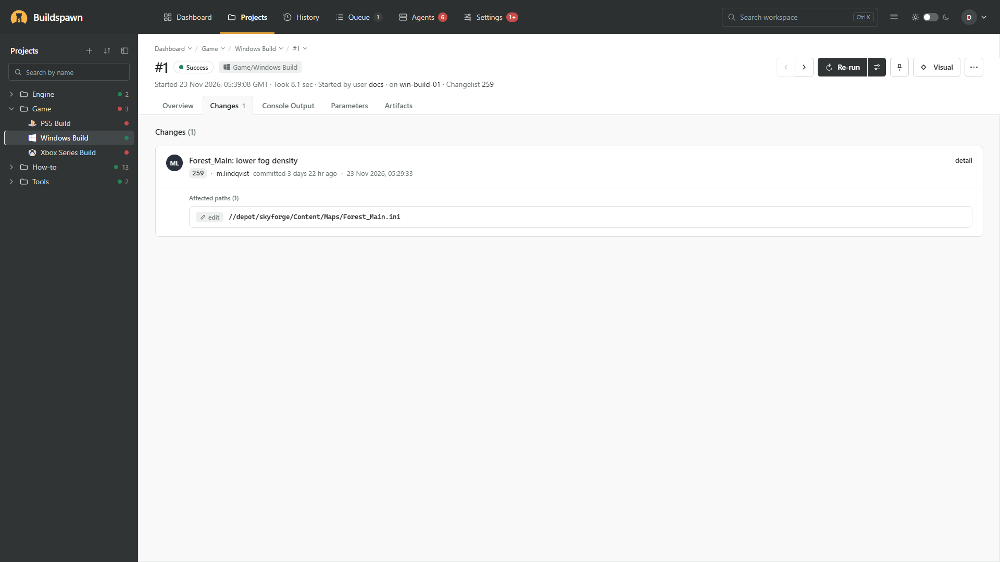
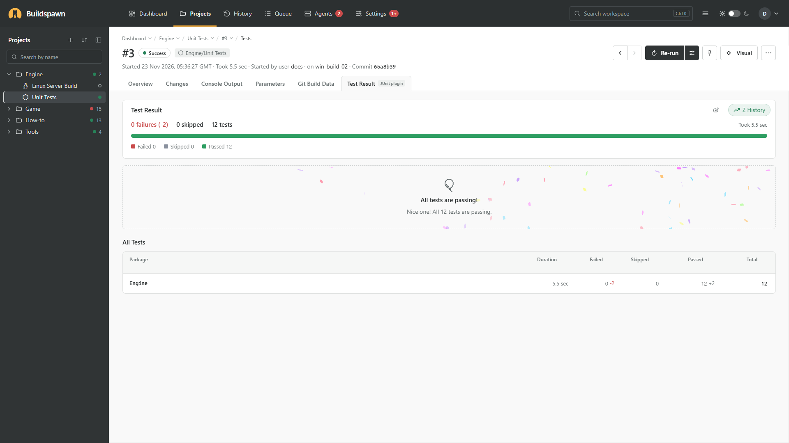

Changes, artifacts and tests
Three tabs on the build page tell you what went into a build, what came out of it and whether its tests passed.
Changes
The Changes tab lists the code changes that are new in this build, compared with the build before it.
- With Perforce, each entry is a changelist: its number, author, description and files.
- With Git, each entry is a commit: its short hash, author, message and files.
- With several version control roots, the changes are grouped by root.
Each entry shows the description, the changelist number or commit hash, the author, when it was committed, and the Affected paths with the action on each file (edit, add, delete). The tab title shows how many changes there are. The detail link opens the details of the change.
To see the changes of many builds in one list, open the Change Log tab of the build configuration.
The info line in the header always shows the changelist or commit the build used, for example Changelist 259 or Commit 65a8b39, even when there are no new changes.

The Overview tab shows the newest changes in a small card. Click View all there to open this tab. For more on Perforce and Git roots, see Perforce and Git.
Artifacts
Artifacts are files that a build keeps after it ends, such as game packages, symbols or reports. A build configuration chooses which files to keep in its build features (the "Archive the artifacts" post-build action, with a file pattern such as Output/**).
When a build kept files, it has an Artifacts tab:

- Click a folder to open it, or a file to download it.
- Click (all files in zip) to download everything at once.
- Type a pattern in the Pattern box, for example
**/*.pdb, and press the arrow to list only matching files.
Artifacts are deleted with their build. Pin a build on its page to keep its artifacts for good.
Tests
When a build publishes a test report (for example JUnit XML files from NUnit, Unity or Unreal Engine test runs), it gets a Test Result tab.

- The top card counts the failures, skipped tests and all tests. The numbers in brackets compare with the previous build, so 0 failures (-2) means two tests that failed last time now pass.
- The bar shows the share of failed, skipped and passed tests.
- History shows how the counts changed over the last builds.
- All Tests lists the packages. Click one to see its classes and tests, and click a failed test to read its error message and stack trace.
The Overview tab of the build also shows a one-line test summary, and the build configuration page shows a chart of test results over time.
Tips
- A build can show several of these tabs at once. Look at Changes first when a test suddenly fails: the culprit is often in the list.
- Keep artifacts small. Archive packages and symbols, not whole work folders.